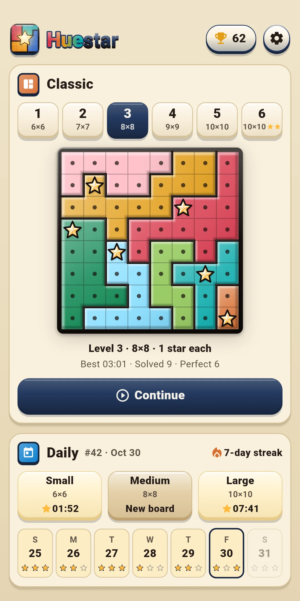
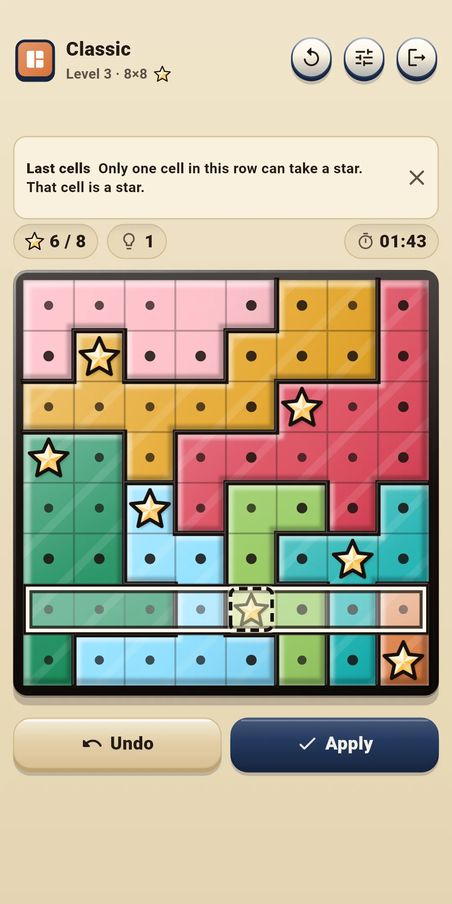
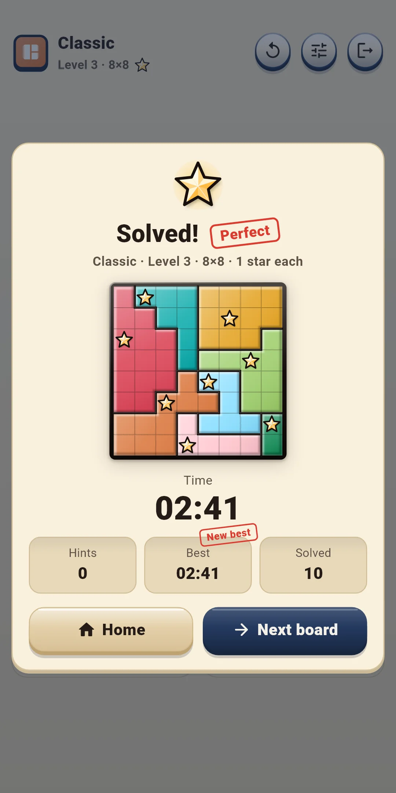
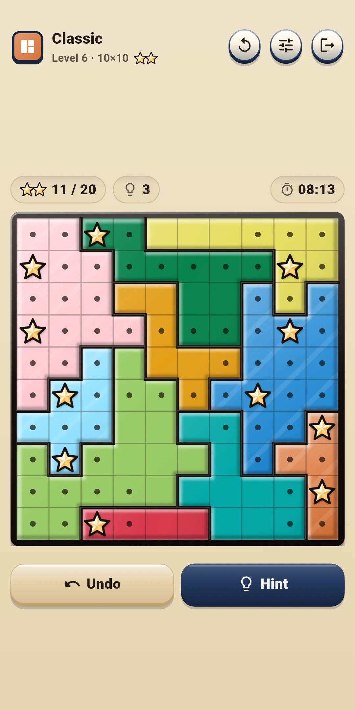
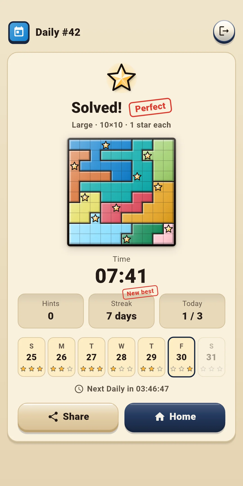
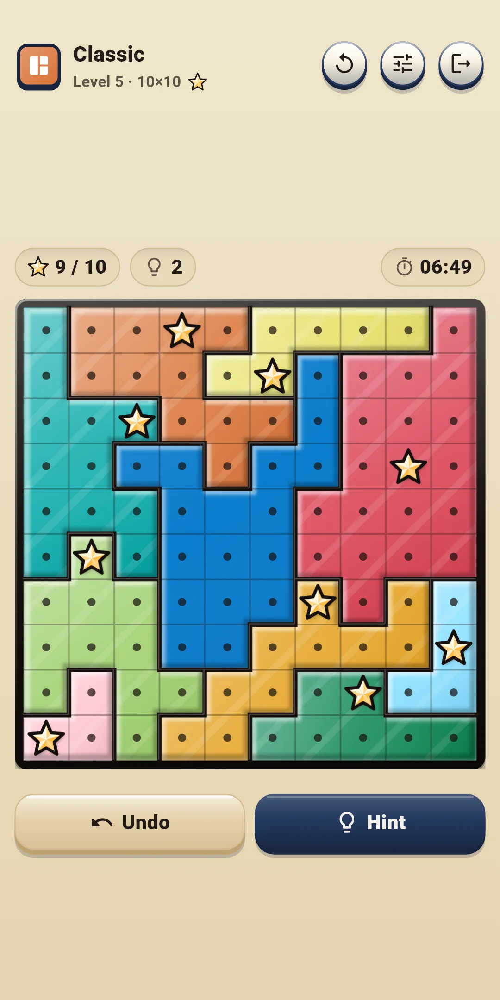
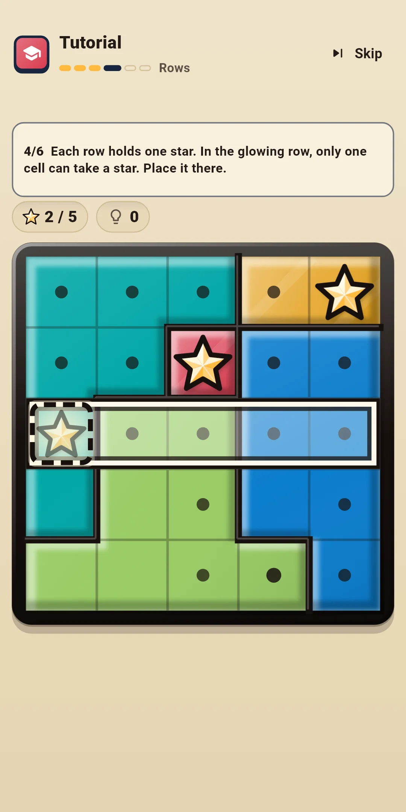

Huestar
How to Play
How to Play







| App Name | Huestar |
|---|---|
| Version | 1.0.0 |
| Developer | Willee Project |
| Platform | Android |
Huestar is a Star Battle logic puzzle: place stars in every row, column and color region of the board. Every board has exactly one solution and can be solved by logic alone, without guessing.
The Tutorial teaches the basics on a single 5×5 board in six steps: Regions → No touching → Dots → Rows → Columns → On your own. Each step highlights where to look, and only the cells you need to decide can be tapped. Hints label the technique they use. From the easiest:
Level 1 can be solved with techniques up to Try a star. Higher levels include boards that need the wider confinement techniques. The hint explains any harder technique with its reason (section 4).
The left side of the top bar shows the mode and the board (for example: Classic, Level 3 · 8×8 and a star picture). The number of stars in the picture is how many stars go in each row, column and region (two-star boards show ★★). Daily shows the Daily number (#12) and the board size. The buttons on the right:
| Button | What it does |
|---|---|
| Restart (↻) | Opens a sheet to choose Restart this board or New board (below) |
| Quick settings | Opens a sheet to change effects, controls and assistance (sections 5 and 8) right in the game. Tap above it or drag it down to close it |
| Exit (door) | Goes back to the home screen. The board you're solving is saved automatically |
The row just above the board:
The row below the board:
| Button | What it does |
|---|---|
| Undo | Takes back your last move. It's grayed out when there is nothing to undo |
| Hint | Shows the next move and why. Each tap moves it along: Hint → Show → Apply (section 4) |
| [Dot|Star] | Only with Controls B. Chooses whether a tap places a star or a dot |
The Restart sheet:
| Option | What it does |
|---|---|
| Restart this board | Puts the board back as it started. In Classic the time and hints start over too; in Daily the time and hints you used that day keep counting. It's grayed out on an untouched board |
| New board (Classic) | Drops this board and gives you another board of the same level. A dropped board doesn't count as solved. Not available in Daily |
Hint shows the next step of the solution together with its reason. Hints are free and unlimited.
You tap the same button up to three times: Hint → Show → Apply.
Turn these on or off under Board and controls and Assistance in Settings. During a game you can change them right away in Quick settings.
| Level | Board size | Stars per row, column and region |
|---|---|---|
| 1 | 6×6 | 1 |
| 2 | 7×7 | 1 |
| 3 | 8×8 | 1 |
| 4 | 9×9 | 1 |
| 5 | 10×10 | 1 |
| 6 | 10×10 | 2 |
Huestar Daily #12 · Medium ✅ 03:41 Hints 0 🔥 5-day streak
#12 is the Daily number, followed by the board size and the time (minutes:seconds, or hours:minutes:seconds after an hour). "Huestar Daily" on the first line is the same in every language. The second line is the hint count and the third line is your streak (only from two days on). The board itself isn't included, because it would give away the answer. The first Daily is #1 and the number goes up by one each day, so the same number and board size mean the same board.
Open them with the trophy button at the top right of the home screen. The button shows how many boards you've solved.
Open Settings with the gear at the top right of the home screen. There are four groups. During a game, the Quick settings button changes the first three groups right away.
| Item | What it does |
|---|---|
| Sound effects | Turns sounds on or off: placing and removing stars, dots, filling a region, rule conflicts, hints, undo, solving a board and the glass confetti in the result |
| Vibration | A short buzz when you place a star, a lighter one when you remove it, two taps when a region fills and a long buzz when you solve a board. Turn it on or off |
| Reduce effects | Tones down all effects at once. While it's on, Motion, Light effects and Glass confetti below act as if they were off |
| Motion · Light effects · Glass confetti | Turns each effect on or off. Motion is the star bounce and the result card, Light effects is the star sparkle, region glow and finish glow, and Glass confetti is the glass pieces that burst over the results. Nothing ever shakes the whole board |
| Item | What it does |
|---|---|
| Controls | Choose A: Tap to cycle (default) or B: Tap · hold (section 3) |
| Long-press time (ms) | Choose from 250, 300, 350, 400 and 500. The default is 350. Shown only with Controls B |
| Item | What it does |
|---|---|
| Auto dots | Fills in dots around stars and in full rows, columns and regions. On by default |
| Show rule conflicts | Shows touching stars and rows, columns or regions that are stuck. On by default |
| Show mistakes instantly | Marks stars that don't match the answer right away. Off by default |
| Show timer | Shows the time above the board. On by default |
| Region patterns | Adds a different line pattern to each region. Off by default |
| Item | What it does |
|---|---|
| Language | Follow the device language (default) or pick one from the list |
| Privacy options | Reopens the ad consent form. Only shown in regions that require consent (such as Europe) |
| How to play | Short explanations of the rules, the controls and the assistance features (hints, auto dots, rule conflicts, no lives) |
| Replay the tutorial | Plays the Tutorial again |
| About | Version, this guide (How to play), the privacy policy and open-source licenses |